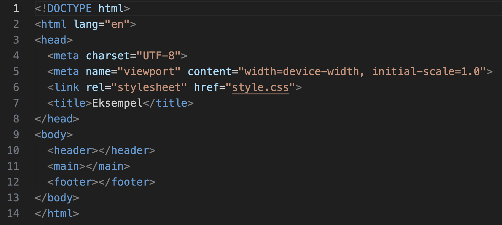
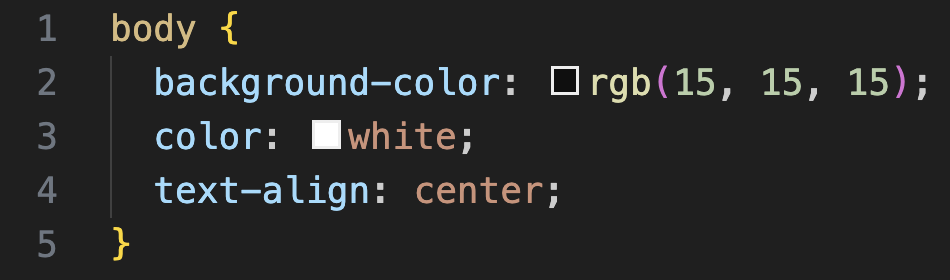

Hvad er HTML?
HTML er et sprog, der bruges til at strukturere og formatere indhold på hjemmesider.
Ved brug af HTML kan man dermed indsætte bl.a. overskrifter, billeder og links på hjemmesider.
Eksempel
Ovenover ses et eksempel på HTML bestående af mange forskelle elementer.
Forklaringer til hver linje ses nedenunder.
- 1 - sætter typen af HTML til !DOCTYPE
- 2 - indeholder alle HTML elementer og sætter sproget til engelsk
- 3 - indeholder elementer, der ikke vises på skærmen
- 4 - tillader specielle tegn at stå på hjemmesiden
- 5 - bestemmer størrelsen på hjemmesiden
- 6 - linker til et stylesheet, der styler hjemmesiden
- 7 - bestemmer titlen på hjemmesiden
- 8 - afslutter 'head' elementet
- 9 - indeholder elementer, der vises på hjemmesiden
- 10 - indeholder elementer, der vises øverst på hjemmesiden
- 11 - indeholder elementer, der vises midterst på hjemmesiden
- 12 - indeholder elementer, der vises nederst på hjemmesiden
- 13 - afslutter 'body' elementet
- 14 - afslutter 'html' elementet
Hvad er CSS?
CSS er et sprog, der bruges til at styre udseendet og layoutet på hjemmesider.
Ved brug af CSS kan man dermed bestemme farver, skrifttyper og placering af elementerne på hjemmesider.
Eksempel
Ovenover ses et eksempel på CSS.
Forklaringer til hver linje ses nedenunder.
- 1 - specificerer, at elementet 'body' styles
- 2 - sætter baggrundsfarven til rgb-værdien (15, 15, 15)
- 3 - sætter tekstfarven til hvid
- 4 - centrerer tekst i elementet
- 5 - afslutter styling af elementet 'body'
mobileApp
Dette projekt handlede om, at vi skulle lave en hjemmeside til de næste studerende, der skulle til Boston, USA. Hjemmesiden skulle laves til telefonen, og derfor fungerer den bedst, hvis man indskrænker vinduet til den mindste vinduebredde.
se hjemmeside